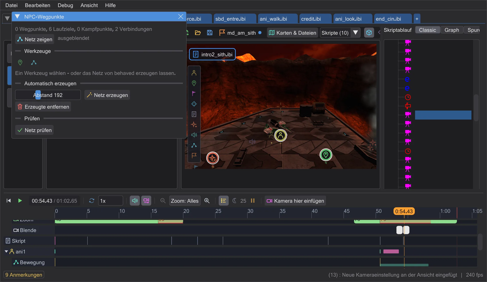

Karte und Szene
NPC-Wegpunkte
Das Netz, auf dem NPCs laufen, wenn sie verfolgen oder fliehen. Von Hand setzen oder vom Programm bauen lassen, dann prüfen.

Geöffnet wird es mit NPC-Wegpunkte in der Kartenleiste. Netz zeigen zeichnet die Wege: grün von Hand gesetzt (target), blau automatisch (Navgoals und Kampfpunkte), orange Sprünge (targetJump).
- Wegpunkte setzen: auf den Boden klicken - jeder neue Punkt wird mit dem vorigen verbunden. Umschalt+Klick beginnt einen neuen Weg, Esc beendet.
- Verbinden: zwei Punkte anklicken verbindet sie (Strg: ein Sprung); zwei verbundene anklicken trennt sie. Ein Punkt hat höchstens vier Verbindungen.
- Netz erzeugen verteilt Wegpunkte über den begehbaren Boden (Abstand: die Originalkarten nutzen etwa 230) und verbindet sie - ein Rückgängig-Schritt. Erzeugte entfernen entfernt nur diese, von Hand gesetzte bleiben.
- Netz prüfen findet, was das Spiel ablehnen würde oder NPCs nicht nutzen können; ein Klick auf ein Problem fliegt hin.